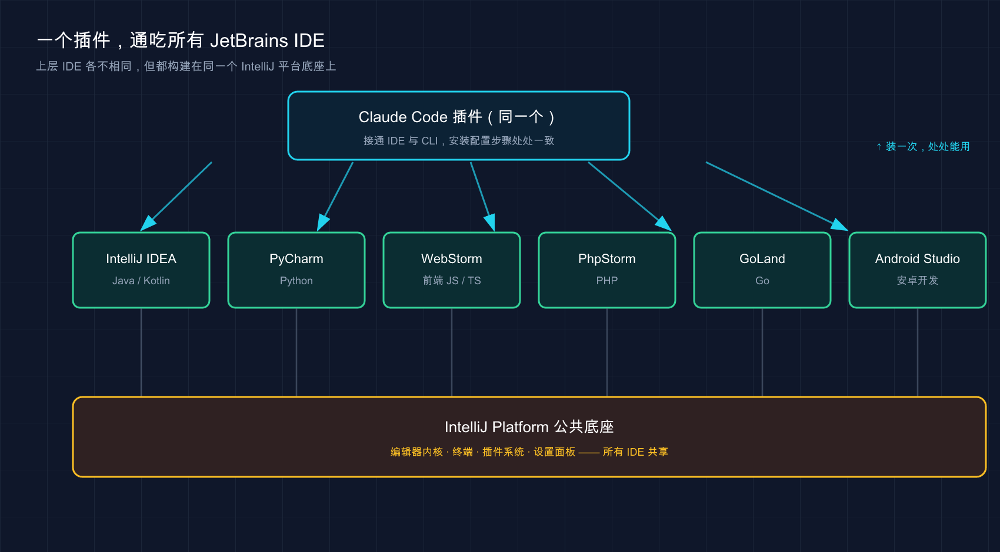

📚 系列导航：上一篇 08 VS Code 集成 把 Claude Code 搬进了 VS Code。这一篇换个阵营——如果你的主力是 IntelliJ IDEA、PyCharm、WebStorm 这类 JetBrains 全家桶，同样有原生插件，玩法既像又不像。下一篇 10 桌面 app。
A：「我天天泡在 PyCharm 里，VS Code 那套扩展跟我没关系吧？」
B：「有原生插件，装一下，Cmd+Esc 就能从编辑器里把 Claude 叫出来。」
A：「那它跟 VS Code 扩展是一回事？diff、@ 提及那些都有？」
B：「内核是同一个 CLI，但界面不是同一拨人做的——有些地方一样，有些地方你得换个姿势。比如它默认是跑在 IDE 自带终端里的，不是一个独立面板。」
这是用 GoLand 写后端的人常有的疑问，很典型：JetBrains 用户总担心自己是「二等公民」，好东西都先给 VS Code。
说句实话，这担心一半对一半不对。对的地方：JetBrains 插件确实比 VS Code 扩展更轻，它是把 CLI 跟 IDE 接通、让信息在两边流动，而不是做一个大而全的图形面板。不对的地方：该有的核心体验一个没少。
这一篇就讲清楚：怎么装、怎么连、和 VS Code 比差在哪、JetBrains 专属的几个坑（ESC 键、WSL、远程开发）怎么填。
看完这一篇，你会拿到：
- 在 IntelliJ / PyCharm / WebStorm 等 JetBrains IDE 里装好 Claude Code 插件的完整步骤
- 「IDE 内置终端」和「外部终端
/ide」两种连接方式，分别什么时候用 - 一张「JetBrains 插件 vs VS Code 扩展」的对照表，外加 JetBrains 专属快捷键
- ESC 键中断失灵、WSL2「检测不到 IDE」、远程开发这三个高频坑的官方解法
01 先理清楚：插件到底做了什么
很多人装完插件一脸懵：「我装了插件，怎么没看到一个像 VS Code 那样的聊天面板？」
先给结论：JetBrains 插件不是一个独立的聊天窗口，它是一座「桥」。Claude Code 本体还是那个跑在终端里的 CLI，插件干的活是把 IDE 和 CLI 接通——你在编辑器里选中的代码、IDE 报的 lint 错误、Claude 想做的改动，能在「IDE」和「终端里的 Claude」之间自动来回传。
类比：手机和电脑之间的隔空投送（AirDrop）。 文件、剪贴板本来各待各的设备上，开了隔空投送两台设备就「认识」了——电脑上复制，手机上直接粘。插件就是 IDE 和 Claude 之间的这条通道：你在 PyCharm 里选中一段代码，终端里的 Claude 立刻就「看见」了，不用复制粘贴。
所以有个关键认知：
在 JetBrains 里，你跟 Claude 对话的地方，是 IDE 自带的集成终端——不是一个新开的侧边面板。
这是和 VS Code 最大的体感差异：VS Code 扩展给你一个图形对话面板；JetBrains 则让你在内置终端里跑 claude，插件在背后喂上下文。对话在终端、diff 弹到 IDE 原生查看器，两边好处都占着，而且几乎零学习成本——命令、快捷键、/ 斜杠命令全是终端那一套。第一次在 IntelliJ 装插件，本来还会担心要重新适应界面，结果发现就是熟悉的那个终端 Claude，只是它突然「长了眼睛」，能看到你选了什么、IDE 标红了哪里。
💡 一句话总结：JetBrains 插件是 IDE 和 CLI 之间的「隔空投送」，对话在内置终端里发生、diff 弹进 IDE，不是一个独立聊天面板。
02 支持哪些 IDE，先对个号
JetBrains 是一整个家族，不是单个软件。好消息是：Claude Code 插件覆盖了主流的几乎全部。
官方明确列出的支持名单：
| IDE | 主要语言 / 场景 |
|---|---|
| IntelliJ IDEA | Java / Kotlin，后端、Android 老本行 |
| PyCharm | Python，数据、AI、脚本 |
| WebStorm | 前端 JS / TS |
| PhpStorm | PHP |
| GoLand | Go |
| Android Studio | 安卓开发（基于 IntelliJ） |
官方说法是「适用于大多数 JetBrains IDE」——名单外的 JetBrains IDE（RubyMine、CLion、Rider 等）大概率也能用，但官方没背书，能装上就用、出问题以「未明确支持」对待。
类比：同一品牌的不同车型，共用一套车机系统。 IntelliJ、PyCharm、WebStorm 就像同厂家的轿车、SUV、跑车，定位不同但底层是同一个平台（都构建在 IntelliJ Platform 上）。所以一个插件通吃，这篇里所有操作步骤，不管你用 IntelliJ 还是 GoLand，菜单路径都一致。下面演示用 PyCharm。

上图把这层关系画清楚了：最上面的 Claude Code 插件只有一个，向下扇出适配每个 IDE；而 IntelliJ IDEA、PyCharm、WebStorm 等虽各管一门语言，却都坐在同一个 IntelliJ Platform 底座上——所以一个插件装一次，处处能用，安装配置步骤也处处一致。
💡 一句话总结：主流 JetBrains IDE 都支持，它们共用同一个 IntelliJ 平台底座——安装和配置步骤在哪个 IDE 里都一模一样。
03 安装：插件 + CLI，缺一不可
这步最容易出岔子，因为 JetBrains 集成需要两样东西都到位：插件，和 Claude Code CLI 本体，少哪个都不行。
类比：手机 App + 后台账号。 装了 App（插件）却没注册后台账号（CLI），打开就是个空壳——插件负责界面集成，真正干活的「后台」是 CLI。所以装插件前先确认 CLI 在。
第一步：先确认 CLI 装好了
跟着这个系列从头读的话，第 02 篇就装好 CLI 了。不确定就在任意终端跑：
claude --version
预期输出：打印出一串版本号，类似 2.x.x (Claude Code)。
如果提示 command not found，说明 CLI 还没装。回到 02 安装 那篇装一下，或者用官方安装命令（分平台）：
# macOS / Linux / WSL
curl -fsSL https://claude.ai/install.sh | bash
# Windows PowerShell
irm https://claude.ai/install.ps1 | iex
国内提示：安装 CLI、之后的登录授权、以及让 Claude 干活，全程都要连 Anthropic 的服务，需要魔法上网。这点和终端版、VS Code 版都一致。
第二步：装 JetBrains 插件
两条路都能走，推荐第一条。
方式一：IDE 里搜（推荐）
- 打开你的 JetBrains IDE
- 进 Settings（设置）→ Plugins（插件）（Mac 快捷键
Cmd+,，Windows/LinuxCtrl+Alt+S） - 切到 Marketplace（市场） 标签
- 搜索 Claude Code
- 点 Install（安装）
- 装完务必重启 IDE
方式二：去插件市场官网装
直接访问 JetBrains 插件市场的 Claude Code 页面，按页面指引安装。
注意插件名带 [Beta] 后缀——说明它还在 Beta 阶段，行为可能随版本变化（以官方文档为准）。功能能用，但别当板上钉钉的稳定版。
第三步：重启 IDE（别跳过）
官方专门强调了一句：
安装插件后，你可能需要完全重启 IDE 才能让它生效。
「完全重启」是彻底退出再打开，不是关个窗口。这个坑很容易栽进去——装完在 IDE 里跑 claude，集成功能死活不激活，以为插件坏了；彻底退出 IntelliJ 重开，一切正常。这坑官方也列在「插件不工作」排查第一条，足见多常见。
| ❌ 容易踩的坑 | ✅ 正确做法 |
|---|---|
| 只装插件、没装 CLI | 先 claude --version 确认 CLI 在 |
| 装完不重启就用 | 装完完全退出 IDE 再重开 |
| 搜到相似插件随便装 | 认准官方的 Claude Code [Beta] |
| 重启关窗口了事 | 「完全重启」= 彻底退出进程再启动 |
💡 一句话总结：JetBrains 集成 = CLI 本体 + 插件，两样都要装；装完一定完全重启 IDE，这是最高频的「装了不生效」原因。
04 连接：两种姿势，看你从哪启动
插件装好、IDE 重启完，下一步是把 Claude Code 跟 IDE「连上」。连上后，选区共享、diff 弹进 IDE、诊断共享才会激活。 连接方式取决于你从哪里启动 Claude。
姿势一：从 IDE 内置终端启动（推荐，自动连）
最省事。打开 IDE 自带的集成终端（一般在底部，有个 Terminal 标签页），直接跑：
claude
预期：Claude Code 启动，所有集成功能自动激活，不用任何手动连接动作。因为你在 IDE 的「肚子里」启动，插件天然知道该跟哪个 IDE 接通。
类比：在自家客厅连 Wi-Fi。 在家里打开手机自动连上，不用输密码。内置终端启动 Claude 就是这体验——环境对了，连接自动完成。
姿势二：从外部终端启动，用 /ide 手动连
如果你习惯用 iTerm、Windows Terminal 这类独立终端，那就先启动 Claude，再手动接通：
claude
然后在 Claude 对话里输入：
/ide
预期：Claude 列出检测到的 JetBrains IDE，选中对应的那个，连接建立、功能激活。类比：在别人家连 Wi-Fi，得手动选网络——/ide 就是这个动作。
一个容易忽略的前提：从项目根目录启动
不管哪种姿势，官方都强调：
如果你希望 Claude 能访问和 IDE 相同的文件，请从与 IDE 项目根目录相同的目录启动 Claude Code。
说白了：IDE 打开的是哪个项目，就在那个项目的根目录下启动 claude。在 ~/Downloads 这种目录启动，Claude 看到的文件就和 IDE 里的项目对不上号了。用内置终端启动天然满足这点——这也是推荐姿势一的另一个原因。
| 启动来源 | 连接方式 | 项目目录 |
|---|---|---|
| IDE 内置终端 | 自动激活，无需操作 | 默认就在项目根目录 ✅ |
| 外部终端（iTerm 等） | 手动跑 /ide 选 IDE |
需自己 cd 到项目根目录 |
一般全程用 IDE 内置终端就够了——连接自动完成、目录天然对齐、终端和代码同窗口，Cmd+Esc 一按就在两者间跳。除非手头已经开着外部终端在跑别的，才用 /ide 临时接一下。
💡 一句话总结：IDE 内置终端启动 = 自动连、目录天然对齐（推荐）；外部终端启动 = 跑
/ide手动连。无论哪种，都从项目根目录启动。
05 它能干什么：五个集成功能
连上之后，插件给的「增益」官方列了五个，逐一说，重点看和 VS Code 的差异，汇总看本节末的对照表。
- ① 快速启动：编辑器里按
Cmd+Esc（Mac）/Ctrl+Esc（Windows/Linux）直接打开 Claude，也可点 UI 里的按钮。这个用得最勤——写着代码想问一句，不用鼠标点终端标签，一个快捷键焦点就过去了。 - ② 选区上下文共享：IDE 里当前选中的代码、或打开的标签页，自动共享给 Claude。选中一段问「这段为什么报错」，它知道你指哪段。
- ③ 文件引用快捷键：按
Cmd+Option+K（Mac）/Alt+Ctrl+K（Linux/Windows）插入一条文件引用，形如@src/auth.ts#L1-99，带路径和行号，让 Claude 精确定位。 - ④ Diff 查看：代码改动直接在 IDE 的 diff 查看器里展示，而非终端里用文本符号画（默认不一定开，得设
auto，下节讲）。 - ⑤ 诊断共享：IDE 的 lint 警告、语法错误那些红线黄线，自动共享给 Claude，它能直接「看到」标红了哪里，不用你复述报错。
两个安全 / 易错点单独拎出来：
⚠️ 安全（和 VS Code 一致）：如果文件命中你设的
Read拒绝规则，它的选区共享会被拦住、不发给 Claude（以官方文档为准）。.env这类敏感文件建议加上。⚠️ 易错：文件引用快捷键和 VS Code 不一样——VS Code 是
Option+K/Alt+K，JetBrains 多一个键，是Cmd+Option+K/Alt+Ctrl+K，从 VS Code 切过来最容易按错。
诊断共享这点体会最深。JetBrains 的代码检查本就是业界最强之一——搁以前得把标红的报错复制给终端 Claude，现在它直接读得到。比如 PyCharm 标了一个「未使用的导入」加几个类型不匹配的黄线，只说一句「把 IDE 标出来的问题修一下」，它就照着诊断一条条修了，不用你贴一行报错。
| 集成功能 | JetBrains | VS Code | 备注 |
|---|---|---|---|
| 快速启动 | Cmd/Ctrl+Esc |
Cmd/Ctrl+Esc |
一致 |
| 选区 / 标签共享 | ✅ 自动 | ✅ 自动 | 一致 |
| 文件引用快捷键 | Cmd+Option+K / Alt+Ctrl+K |
Option+K / Alt+K |
不同！ |
| Diff 弹进 IDE | ✅（需设 auto） |
✅ | 一致 |
| 诊断共享 | ✅ 自动 | ✅ 自动 | 一致 |
| 对话界面形态 | IDE 内置终端 | 独立图形面板 | 核心差异 |
💡 一句话总结：五大增益里选区共享、诊断共享、diff 弹进 IDE 和 VS Code 基本一致；最大差异是对话跑在内置终端，还有文件引用快捷键多按一个键。
06 配置：把 diff 调出来，再调插件
装好连上还不够，有两处配置值得花两分钟调一下，体验差很多。
配置一：把 diff 工具设成 auto（重要）
前面说过 diff 能弹进 IDE，但这取决于一个配置项。在 Claude Code 里跑 /config，找到 diff 工具（diff tool），设为 auto：
/config
| 取值 | 效果 |
|---|---|
auto |
改动在 IDE 的 diff 查看器里并排显示（推荐） |
terminal |
改动留在终端里用文本符号画 |
这里强烈建议设 auto——既然用了 IDE，就把 JetBrains 那个好用的并排 diff 视图利用起来，终端文本 diff 在改动一多时真费眼。
配置二：插件设置（Settings → Tools → Claude Code [Beta]）
插件本身的设置藏在 Settings → Tools → Claude Code [Beta] 里。几个值得知道的：
- Claude command（Claude 命令路径）：默认
claude；如果你的claude不在标准 PATH 里，可填绝对路径（如/usr/local/bin/claude）或npx @anthropic-ai/claude-code。点 Claude 图标提示「command not found」时，多半就是这里要配。 - 抑制「Claude 命令未找到」的通知：嫌提示烦可以关掉。
- 启用 Option+Enter 多行输入（仅 macOS）：开启后提示框里
Option+Enter插入换行。Option 键被意外捕获、影响打字就关掉它，改完需重启终端。 - 启用自动更新：自动检查并安装插件更新，重启时应用。
这几项里最该记的是最上面那行 Claude command 路径——点 Claude 图标报「command not found」，十有八九就是它要配。
💡 WSL 用户特别注意：把 Claude 命令设成
wsl -d Ubuntu -- bash -lic "claude"（把Ubuntu换成你的 WSL 发行版名）。
💡 一句话总结：进 Claude Code 跑
/config把 diff 设成auto，再去 Settings → Tools → Claude Code [Beta] 调插件——其中 Claude command 路径是排查「命令未找到」的关键。
07 JetBrains 用户专属的三个坑
下面这三个坑，是 JetBrains 用户比 VS Code 用户更容易撞上的，官方单独列了解法。
坑一：ESC 键中断失灵
JetBrains 终端有个老毛病：你想按 ESC 中断 Claude 正在跑的操作，结果焦点「啪」一下跳到编辑器去了，操作没断成。 原因是它默认把 ESC 绑成了「把焦点移到编辑器」。解法：
- 进 Settings → Tools → Terminal
- 二选一：取消勾选 「使用 Escape 将焦点移动到编辑器」（Move focus to the editor with Escape），或点「配置终端快捷键」删掉「切换焦点到编辑器」（Switch focus to Editor）这个绑定
- 应用更改
改完 ESC 就能正常中断了。强烈建议装完就顺手改掉——不然某次 Claude 跑飞了你想叫停，按 ESC 没反应，那一下是真急。
坑二：WSL2 提示「未检测到可用的 IDE」
在 WSL2 上用 Claude Code + JetBrains IDE，跑 /ide 经常报 「No available IDEs detected」。根因不是插件坏了，而是 WSL2 的 NAT 网络或 Windows 防火墙，把「WSL2 里的 Claude」和「Windows 上的 IDE」的连接挡了（WSL1 不受影响）。官方给了两个方案，推荐方案一（放行防火墙），因为它不动现有网络模式：
# 第一步：在 WSL shell 里查 IP
hostname -I
# 假设输出 172.21.123.45，记下子网 172.21.0.0/16
# 第二步：以管理员身份开 PowerShell，建防火墙规则（IP 范围按你的子网改）
New-NetFirewallRule -DisplayName "Allow WSL2 Internal Traffic" -Direction Inbound -Protocol TCP -Action Allow -RemoteAddress 172.21.0.0/16 -LocalAddress 172.21.0.0/16
然后重启 IDE 和 Claude Code 让规则生效。
方案二是把 WSL2 切成「镜像网络」（需 Windows 11 22H2 或更高），在 Windows 用户目录的 .wslconfig 里加 [wsl2] 段、设 networkingMode=mirrored，再 wsl --shutdown 重启。用 Windows 10 的别折腾镜像网络，直接用方案一。
坑三：远程开发，插件得装在「远程主机」
如果你用 JetBrains 的 远程开发（Remote Development）——本地客户端连到远程服务器写代码——有个反直觉的点：
插件必须装在「远程主机」上，不是装在你本地的客户端机器上。
安装路径是 Settings → Plugin (Host)。常见的翻车是在本地客户端装了插件，怎么都连不上，折腾半天才发现装错地方。记住：Claude 实际在哪台机器干活，插件就装哪台。 远程开发里干活的是远程主机，插件就归它。
| 坑 | 一句话解法 |
|---|---|
| ESC 不能中断 | Settings → Tools → Terminal，取消「Escape 移焦点到编辑器」 |
| WSL2 检测不到 IDE | 放行 Windows 防火墙（推荐）或切镜像网络，然后重启 |
| 远程开发连不上 | 插件装在远程主机（Settings → Plugin (Host)），不是本地客户端 |
💡 一句话总结：ESC 失灵改终端快捷键、WSL2 检测不到放行防火墙、远程开发插件装远程主机——这三个是 JetBrains 专属高频坑，装完顺手把 ESC 那个改掉。
08 动手环节：10 分钟在 JetBrains 里跑通全流程
下面这套从零走一遍，每步都给了「你该看到什么」，照着做就能自验。用 PyCharm 演示，其他 JetBrains IDE 步骤完全一样。
第 0 步：确认 CLI 在 —— 跑 claude --version，预期打印版本号（如 2.x.x (Claude Code)）；报 command not found 就先回 02 安装。
第 1 步：装插件并重启 —— PyCharm → Settings → Plugins → Marketplace，搜 Claude Code → Install，完全退出 PyCharm 再重开。预期重启后 Settings → Tools 下能看到 Claude Code [Beta]。
第 2 步：建个最小练手项目 —— 新建文件 demo.py：
def greet(name):
return "Hello " + name
print(greet("world"))
第 3 步：从 IDE 内置终端启动 Claude —— 打开 PyCharm 底部的 Terminal 标签跑 claude。预期集成功能自动激活（内置终端启动，无需 /ide）；首次会引导你登录 Anthropic 账户，浏览器完成授权。
第 4 步：把 diff 设成 auto —— 在 Claude 里跑 /config，把 diff 工具设为 auto，这样下一步改动会弹进 PyCharm 的 diff 查看器。
第 5 步：选中代码 + 提问，验证选区共享
在编辑器里选中 greet 函数那两行，回到 Claude 终端，输入：
这段选中的函数有什么可以改进的地方？
预期：Claude 基于你选中的两行作答（可能建议用 f-string、加类型注解）——它没反问你「哪个函数」，说明选区共享生效了。这是验证「隔空投送」通没通的关键一步。
第 6 步：让它改，看 diff 弹进 IDE
接着输入：
帮我把它改成用 f-string，并加上类型注解
预期：因为上一步设了 auto，改动在 PyCharm 的 diff 查看器里并排显示——左边原始 return "Hello " + name，右边改后 return f"Hello {name}"，签名也加了类型注解。看清楚了再接受。
跑到这步，插件装好、CLI 连通、选区共享、diff 弹进 IDE 这四件核心你就都验过一遍了。要是第 5 步它反问你哪个函数、或第 6 步 diff 没弹进 IDE，回头按第 03、04、06 节查。
09 小结
这一篇把 Claude Code 装进了 JetBrains 全家桶，核心就这几件事：
- 插件是「桥」不是「面板」：它把 IDE 和 CLI 接通，对话跑在 IDE 内置终端、diff 弹进 IDE 原生查看器，不像 VS Code 给你一个独立聊天面板。
- 装要装两样：CLI 本体 + 插件，缺一不可；装完一定完全重启 IDE，这是最高频的「装了不生效」原因。
- 连有两种姿势：IDE 内置终端启动自动连（推荐）、外部终端跑
/ide手动连；都从项目根目录启动。 - 三个专属坑：ESC 中断失灵（改终端快捷键）、WSL2 检测不到 IDE（放行防火墙）、远程开发插件装远程主机。
你现在应该能：在自己的 JetBrains IDE 里独立装好插件、把 Claude 和 IDE 连通、用选区共享把上下文喂准、让改动弹进 IDE 的 diff 查看器审阅。JetBrains 用户不是二等公民——该有的核心体验一个没少。
到这里，VS Code 和 JetBrains 两大 IDE 阵营都覆盖了。它们的共同点是：都要先有一个 IDE，再把 Claude 接进去。 那如果你压根不想开 IDE，只想要一个独立的、开箱即用的 Claude 客户端呢？
下一篇 10 桌面 app（Desktop）——Claude Code 还有个独立的桌面应用，不依附任何编辑器，双击就能用。我们看看它适合什么人、和 IDE 集成版怎么取舍，以及它有哪些 IDE 版给不了的便利。